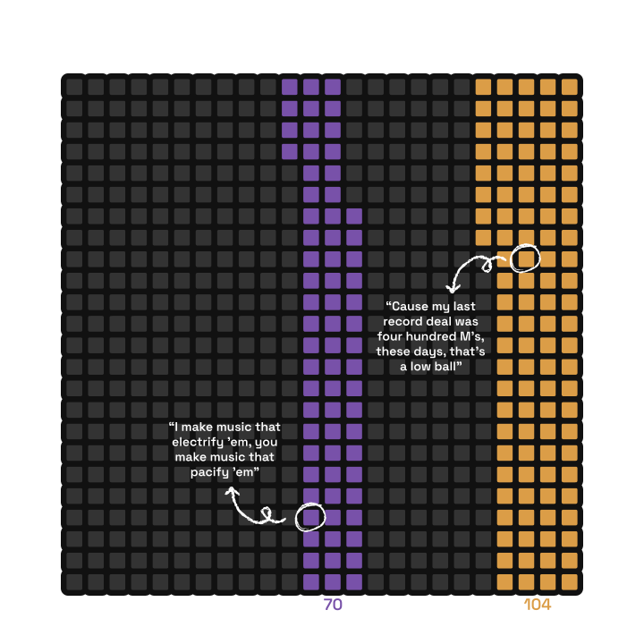
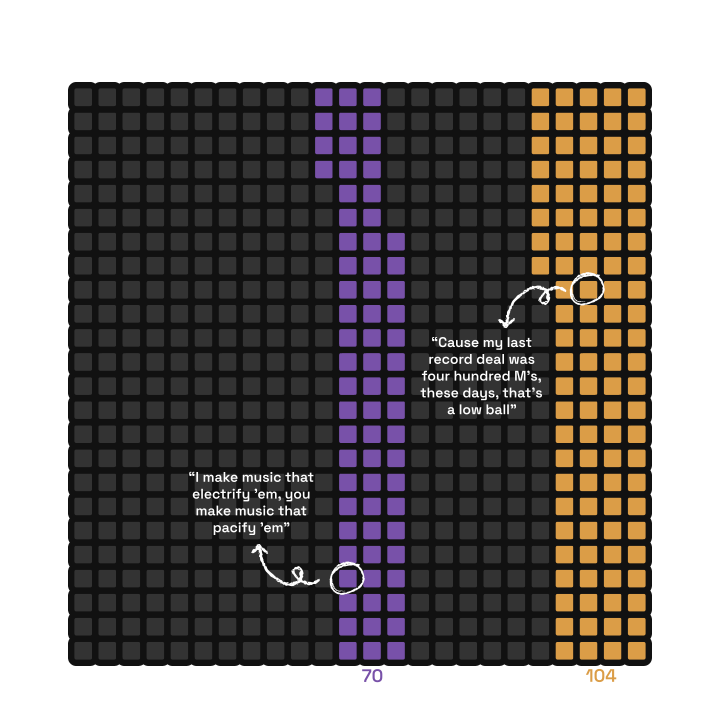
 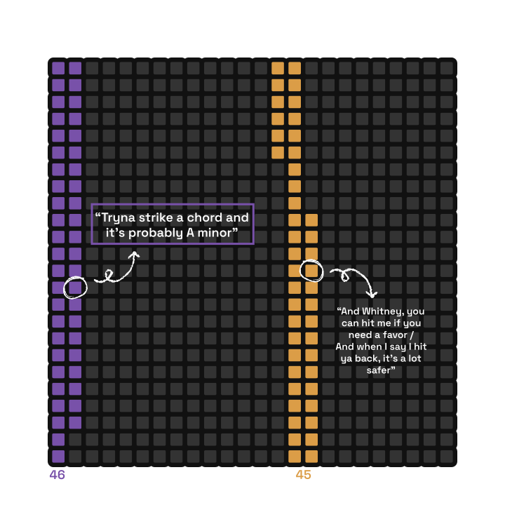
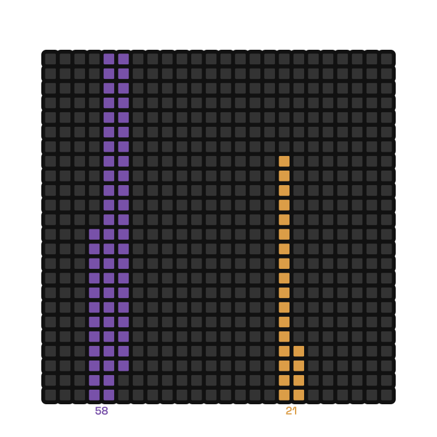
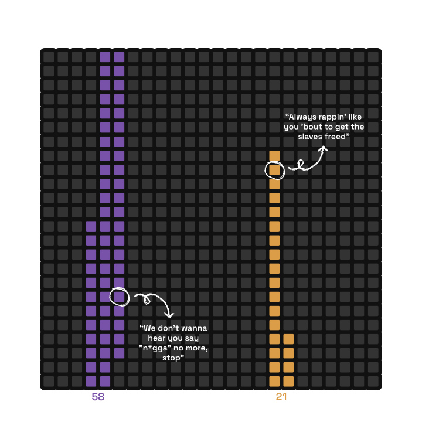
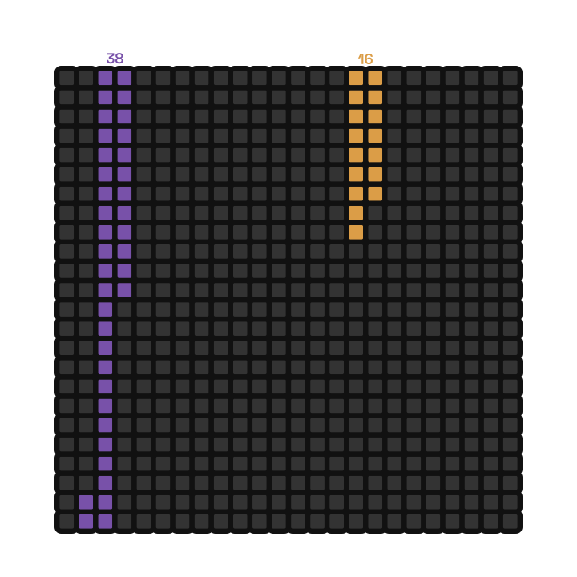
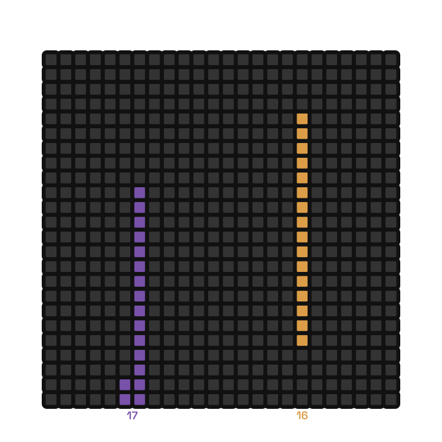
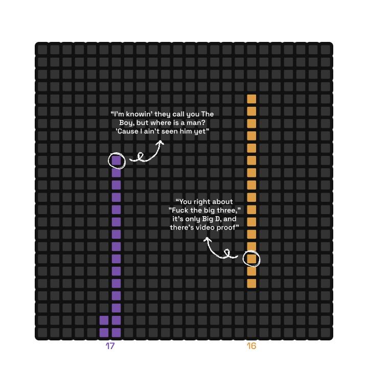
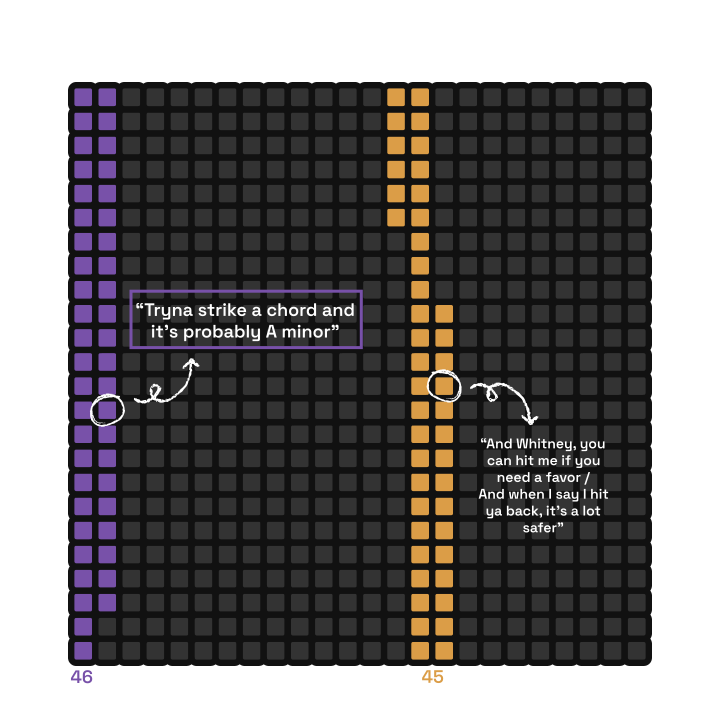
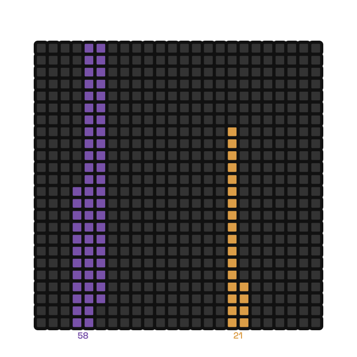
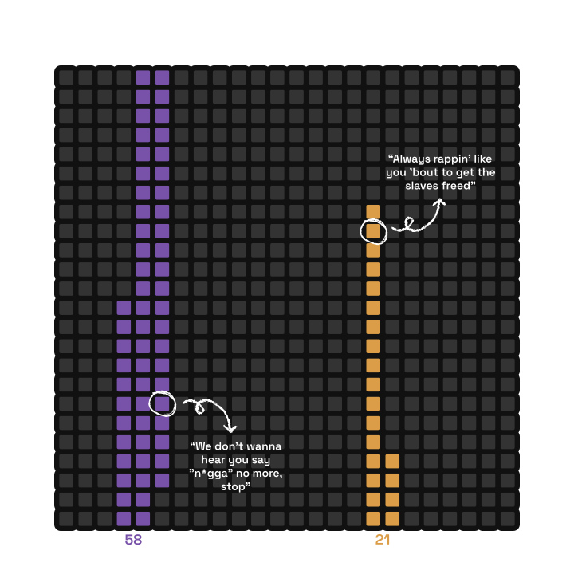
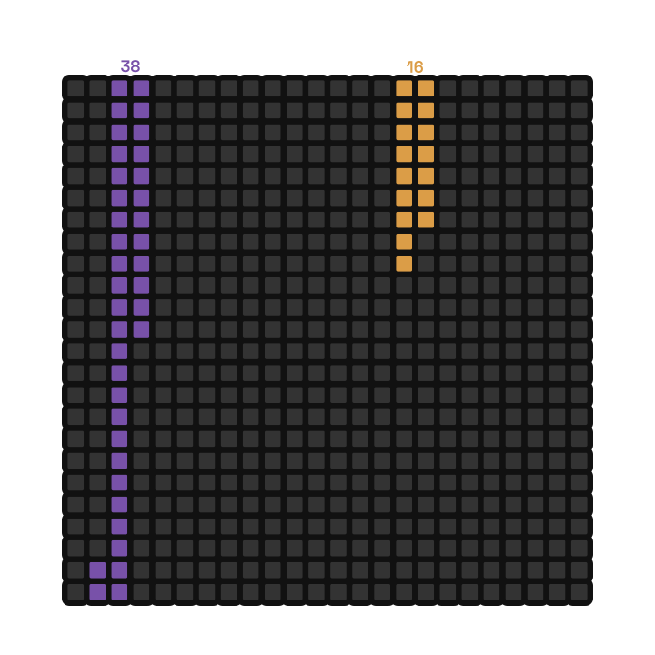
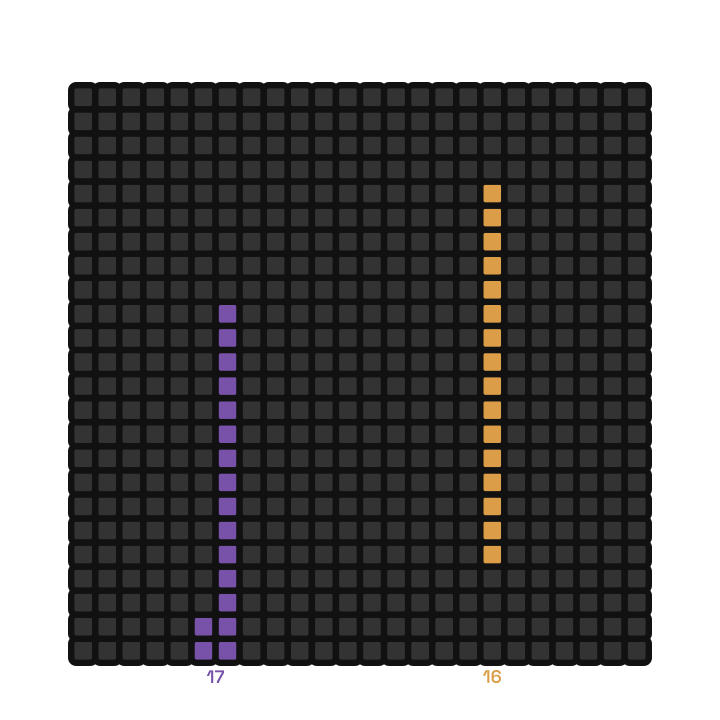
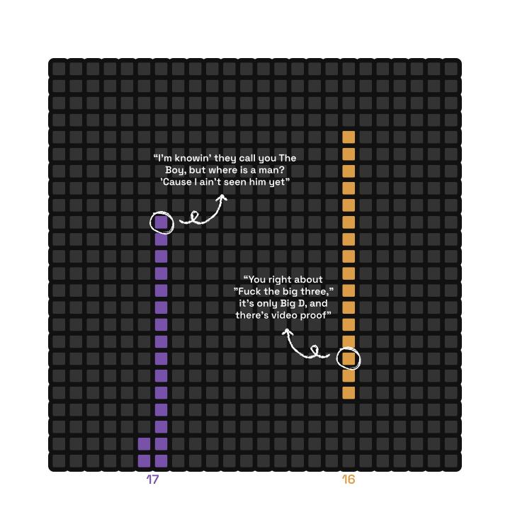
The Final Act
Ultimately, Kendrick was crowned winner by popular vote for his smash-hit success "Not Like Us", a searing character assassination of Drake that coincidentally became a nightclub hit, a Grammy winner and the fastest hip-hop song to hit one million streams on Spotify – a record previously held by Drake's "God's Plan". Drake's response, "The Heart Part 6", was overshadowed completely, even though it was released the next day.
On February 4th, 2025, Drake opened his Anita Max Win Tour at the RAC Arena in Perth, Australia, wearing a 'bullet hole' ridden hoodie with real smoke billowing from behind, implying that he might have lost the battle, but stating to his fans that "the year is now 2025, and no matter what, Drizzy Drake is very much alive." Five days later, Kendrick unabashedly celebrated his victory by performing "Not Like Us" at the Super Bowl Halftime Show, with 65,719 fans in attendance (and thousands more virtually) hitting the controversial "A minor" lyric.